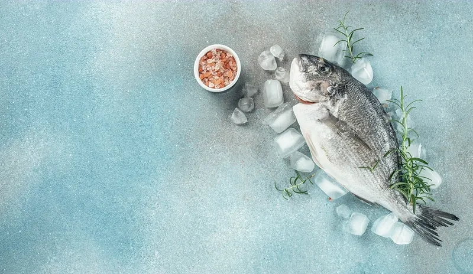
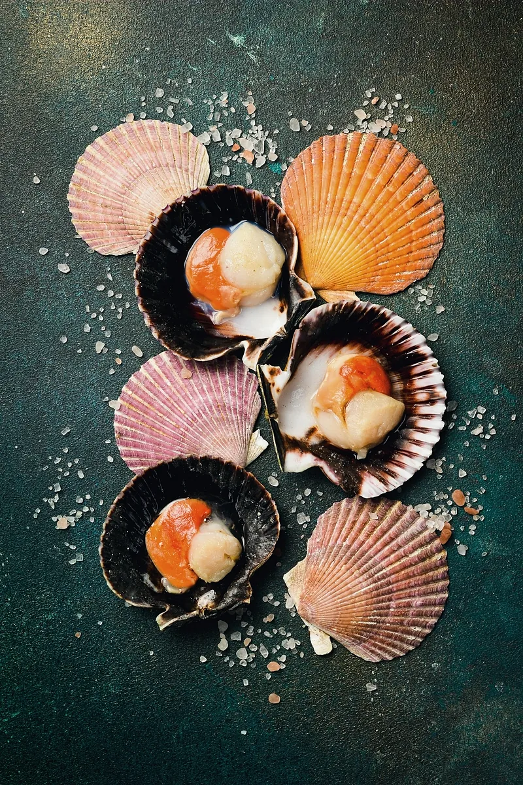
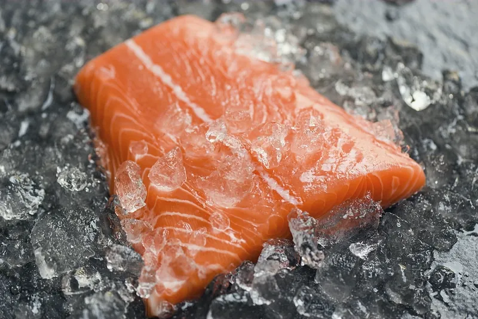
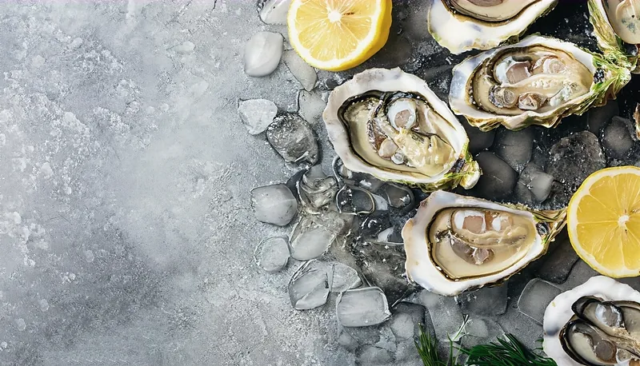

Nothing travels farther than the tide line.
The catch comes up the slip before seven. What the boats bring decides the day; the menu is written afterwards, not before.
We buy whole fish from named boats and pay for the day, not the weight — a boat that comes in light has still been out. Shellfish come from a diver who works alone and will not be hurried. The oysters grow slowly where the river loses its name to the sea. Herbs and small fruit come down the hill each afternoon from a garden with a wall around it and a gate that sticks.
None of this is a policy. It is just the shortest possible distance between the water and the counter, kept short on purpose.




Who the counter answers to.
The Vesper
day boat · line caughtOut before light, back before seven, never farther than the sound. Whole fish only — haddock, herring, dorade when the water warms. What the Vesper cannot catch, the counter does not serve.
Ana, who dives
scallops · by hand, aloneShe works the cold ledges on her own clock and sells to one kitchen. The scallops come up in ones and twos, and the count for the evening is whatever her bag says it is.
The estuary beds
oysters · grown slowThree winters in cold, half-salt water where the river gives up its name. Slower than farming ought to be, which is the entire point of them.
The walled garden
herbs · small fruit · cut at fourUp the hill behind the harbour, behind a gate that sticks. Herbs are cut at four o'clock so they arrive still surprised; the gooseberries are argued over every summer and the garden always wins.
Some mornings the water turns silver and the whole day rearranges itself. When the herring run, the menu already knows.
Taste the morning's decision.
Fourteen seats at the pass, two seatings a night, and whatever the Vesper brought up the slip.